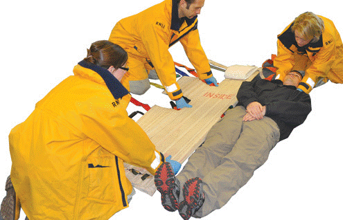
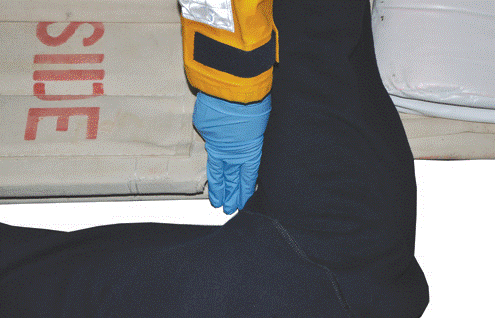
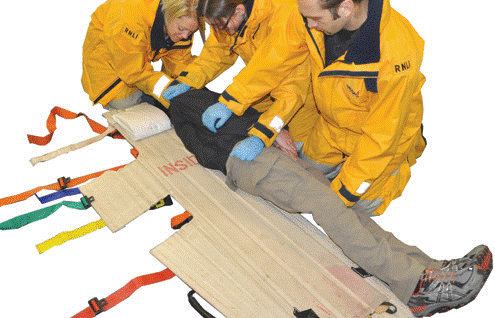
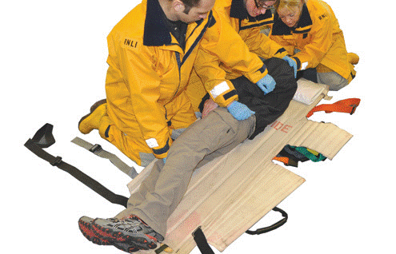
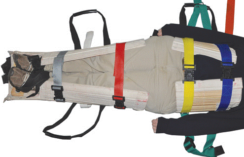
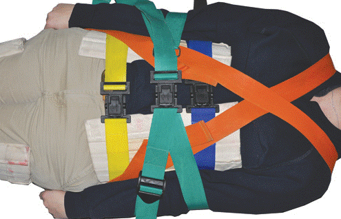
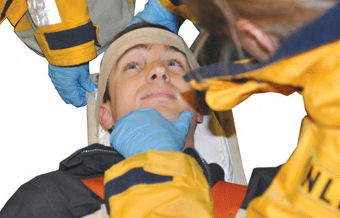
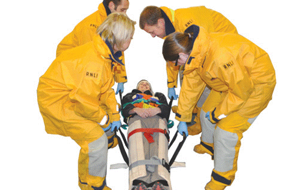
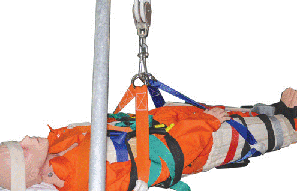

(Lifeboat crews only)
Neil Robertson
Use of the Neil Robertson stretcher
Extracting the casualty from a confined space.
Lifting the casualty vertically.
Not ideal for suspected spinal injuries as only semi rigid.
Internal wooden slats can be used as splints.
Safety
NEVER lift the stretcher by the ends only.
Ensure the straps are secure before lifting. MAKE SURE
CASUALTY CAN BREATHE.
Can be put into the OB stretcher if further transportation required.
Can be placed into the HELO stretcher if airlift required.
REMEMBER: TALK to the casualty and explain what you’re doing.
Lay the stretcher beside the casualty. Fold the flaps nearest the casualty under, and make sure the straps are clear. Log roll the casualty in opposite direction. Pull out the flaps and all straps. Centre the casualty in the stretcher by sliding.
Log roll casualty onto stretcher. Ensure head is held at all times. Pillow should be in nape of neck. Position stretcher so that the recess in upper chest wrap is 3 fingers below the casualty’s armpit.


Log roll casualty onto stretcher. Ensure head is held at all times. Pillow should be in nape of neck.

Log roll the casualty in opposite direction. Pull out the flaps and all straps. Centre the casualty in the stretcher by sliding.

Fold the chest and leg flaps around the casualty and secure the straps in the order BLUE, YELLOW, RED, GREY. Use the BLACK strap in a figure of eight around the feet.

Secure the ORANGE straps diagonally across the chest. Secure elbows in V of GREEN strap. Tighten all the straps by feeding through to minimise casualty movement.

Secure head strap making sure the head is immobilised at all times.

Lift the casualty using the four black handles.

The stretcher can be lifted using a Lifting Bridle. Lay the long white strap along the back of the stretcher ensuring the orange straps are towards the head end. Pass the coloured straps through the white handles of the stretcher and adjust the long white strap. The four rings then attach to the carabiner on the lifting bridle.
